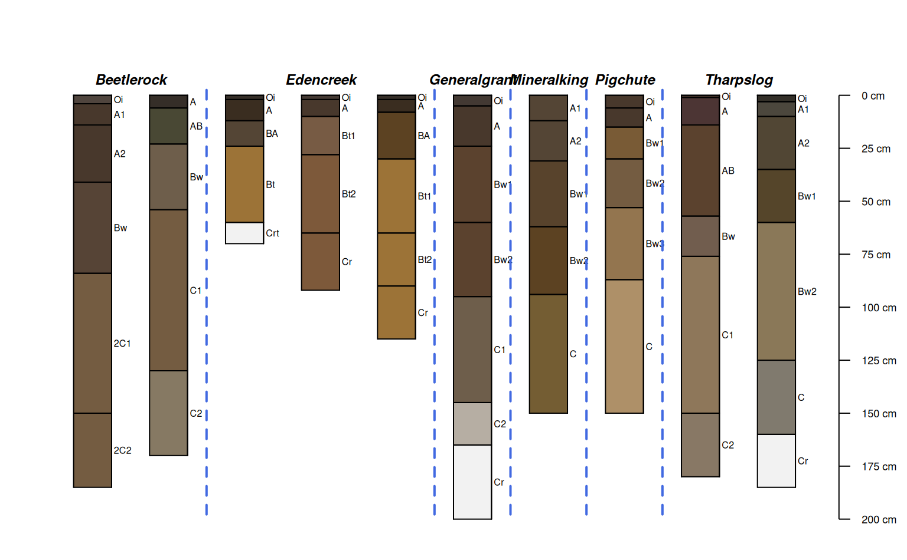
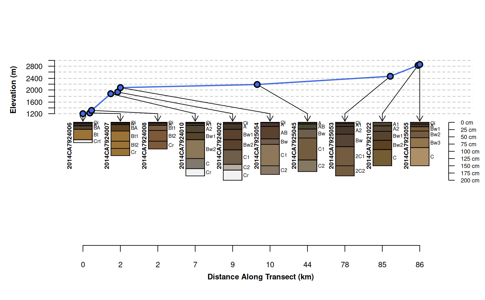
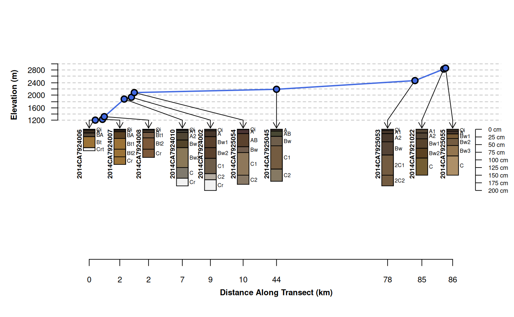
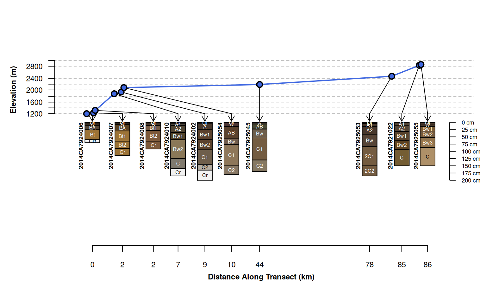
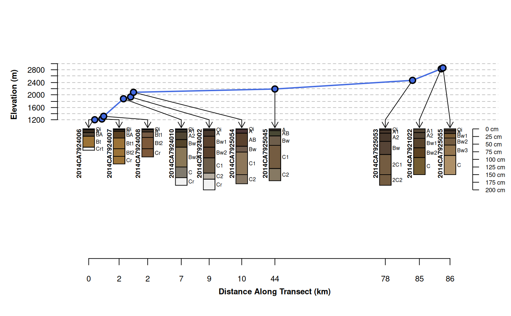
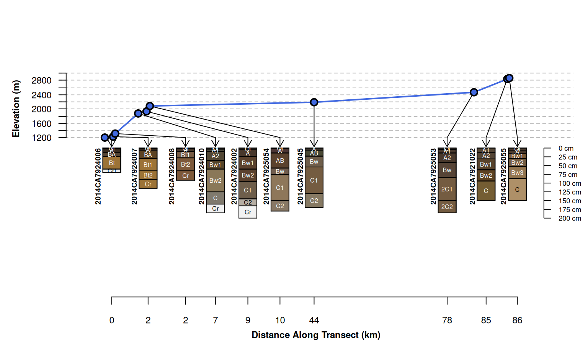

Plot a collection of Soil Profiles linked to their position along some gradient (e.g. transect).
plotTransect(
s,
xy,
grad.var.name,
grad.var.order = order(site(s)[[grad.var.name]]),
transect.col = "RoyalBlue",
tick.number = 7,
y.offset = 100,
scaling.factor = 0.5,
distance.axis.title = "Distance Along Transect (km)",
grad.axis.title = NULL,
dist.scaling.factor = 1000,
spacing = c("regular", "relative"),
fix.relative.pos = list(thresh = 0.6, maxIter = 5000),
...
)Arguments
- s
SoilProfileCollectionobject- xy
sfobject, defining point coordinates of soil profiles, must be in same order ass, must be a projected coordinate reference system (UTM, AEA, etc.)- grad.var.name
the name of a site-level attribute containing gradient values
- grad.var.order
optional indexing vector used to override sorting along
grad.var.name- transect.col
color used to plot gradient (transect) values
- tick.number
number of desired ticks and labels on the gradient axis
- y.offset
vertical offset used to position profile sketches
- scaling.factor
scaling factor applied to profile sketches
- distance.axis.title
a title for the along-transect distances
- grad.axis.title
a title for the gradient axis
- dist.scaling.factor
scaling factor (divisor) applied to linear distance units, default is conversion from m to km (1000)
- spacing
profile sketch spacing style: "regular" (profiles aligned to an integer grid) or "relative" (relative distance along transect)
- fix.relative.pos
adjust relative positions in the presence of overlap,
FALSEto suppress, otherwise list of arguments toaqp::fixOverlap- ...
further arguments passed to
aqp::plotSPC.
Value
An invisibly-returned data.frame object:
scaled.grad: scaled gradient values
scaled.distance: cumulative distance, scaled to the interval of
0.5, nrow(coords) + 0.5distance: cumulative distance computed along gradient, e.g. transect distance
variable: sorted gradient values
x: x coordinates, ordered by gradient values
y: y coordinate, ordered by gradient values
grad.order: a vector index describing the sort order defined by gradient values
Details
Depending on the nature of your SoilProfileCollection and associated gradient values, it may be necessary to tinker with figure margins, y.offset and scaling.factor.
Note
This function is very much a work in progress, ideas welcome!
Examples
# \donttest{
if(require(aqp) &
require(sf) &
require(soilDB)
) {
library(aqp)
library(soilDB)
library(sf)
# sample data
data("mineralKing", package = "soilDB")
# device options are modified locally, reset when done
op <- par(no.readonly = TRUE)
# quick overview
par(mar=c(1,1,2,1))
groupedProfilePlot(mineralKing, groups='taxonname', print.id=FALSE)
# setup point locations
s <- site(mineralKing)
xy <- st_as_sf(s, coords = c('longstddecimaldegrees', 'latstddecimaldegrees'))
st_crs(xy) <- 4326
# convert to suitable projected cRS
# projected CRS, UTM z11 NAD83 (https://epsg.io/26911)
xy <- st_transform(xy, 26911)
# adjust margins
par(mar = c(4.5, 4, 4, 1))
# standard transect plot, profile sketches arranged along integer sequence
plotTransect(mineralKing, xy, grad.var.name = 'elev_field',
grad.axis.title = 'Elevation (m)', label = 'upedonid', name = 'hzname')
# default behavior, attempt adjustments to prevent over-plot and preserve relative spacing
# use set.seed() to fix outcome
plotTransect(mineralKing, xy, grad.var.name = 'elev_field',
grad.axis.title = 'Elevation (m)', label = 'upedonid',
name = 'hzname', width = 0.15, spacing = 'relative')
# attempt relative positioning based on scaled distances, no corrections for overlap
# profiles are clustered in space and therefore over-plot
plotTransect(mineralKing, xy, grad.var.name = 'elev_field',
grad.axis.title = 'Elevation (m)', label = 'upedonid', name = 'hzname',
width = 0.15, spacing = 'relative', fix.relative.pos = FALSE)
# customize arguments to aqp::fixOverlap()
plotTransect(mineralKing, xy, grad.var.name = 'elev_field', crs = crs.utm,
grad.axis.title = 'Elevation (m)', label = 'upedonid', name = 'hzname',
width = 0.15, spacing = 'relative',
fix.relative.pos = list(maxIter=6000, adj=0.2, thresh=0.7))
plotTransect(mineralKing, xy, grad.var.name = 'elev_field', crs = crs.utm,
grad.axis.title = 'Elevation (m)', label = 'upedonid', name = 'hzname',
width = 0.2, spacing = 'relative',
fix.relative.pos = list(maxIter = 6000, adj = 0.2, thresh = 0.6),
name.style = 'center-center')
par(op)
}
#> Loading required package: sf
#> Linking to GEOS 3.12.1, GDAL 3.8.4, PROJ 9.4.0; sf_use_s2() is TRUE


#> 689 iterations

 #> 1073 iterations

#> 760 iterations

# }
#> 1073 iterations

#> 760 iterations

# }